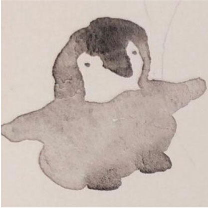

自己紹介
かおり(鹿児島在住)
映画鑑賞と絵を描くことが好き。
洋画、邦画、アニメ映画幅広く観ます。
最近の推しは立花裕大さんが演じる豊前江。
書いた日：2022/09/22
サイト説明
GMOペパボオフィスで開催された
鹿児島.mk
#26 Webサイト制作体験会 (HTML/CSS入門)に参加して
制作したプロフィールサイトです。
スタッフの皆様、GMOペパボ様いつもありがとうございます！
- 鹿児島.mk #4 もくもく会 with 企画会議
- 鹿児島.mk #5 2019年最後のLT大会
- ゆるやかな合同Web勉強会
- Rails Girls Kagoshima 1st
- 鹿児島.mk #26 Webサイト制作体験会 (HTML/CSS入門)
- 呪術廻戦0
- スパイダーマン：ノーウェイホーム
- あんさんぶるスターズ!!
- THE BATMAN
- モービウス
- ファンタスティックビースト
- 名探偵コナン
- ドクター・ストレンジ
- シン・ウルトラマン
- 犬王
- 特『刀剣乱舞-花丸-』～月ノ巻～
- トップガン
- ジュラシックワールド
- 特『刀剣乱舞-花丸-』～華ノ巻～
- 刀剣乱舞 静かの海のパライソ 4DX
- 沈黙のパレード
- 劇場版 うたの☆プリンスさまっ♪ マジLOVEスターリッシュツアーズ